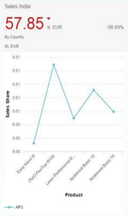
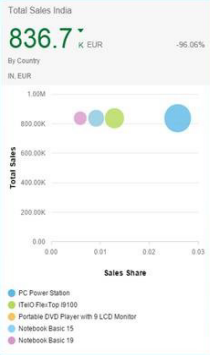
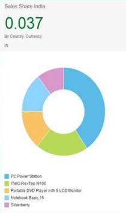
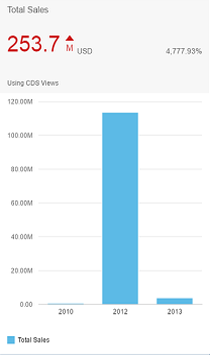

Analytic Cards
Analytic cards show data in a variety of chart formats.
Analytic cards consist of two areas: a header area that displays the aggregated value of a key measure (KPI), along with other information, and a chart area that displays a representation of data, in graphic form. The measures and dimensions used in analytic cards are defined in the annotation file.
SAP Web IDE versions that use SAPUI5 1.38 or higher will automatically ensure that the correct value is used for the template property when an analytic card is configured. However, if the card is created with a lower version of SAP Web IDE then this property must be manually set to sap.ovp.cards.charts.analytical.
|
Chart Type |
Description |
Chart Type (Annotation File) |
|---|---|---|
|
Line |
A line chart displays information as a series of data points connected by straight line segments. They are often used to visualize a trend in data over time. |
"UI.ChartType/Line" Example: <PropertyValue Property="ChartType" EnumMember="UI.ChartType/Line" /> |
|
Bubble |
Bubble charts display up to three measures and two dimensions of data. The three measures are reflected in the X and Y axes, and in the size of the bubbles. The dimensions can be expressed in the colors and/or shapes of the bubbles. Bubble charts are often used to facilitate the understanding of social, economical, medical, and scientific relationships. |
"UI.ChartType/Bubble" Example: <PropertyValue Property="ChartType" EnumMember="UI.ChartType/Bubble" /> |
|
Donut |
A donut chart displays data as different colored sections of a donut. The value of the measure determines the size of each section. Donut charts help the viewer to quickly determine the key area that needs attention. |
"UI.ChartType/Donut" Example: <PropertyValue Property="ChartType" EnumMember="UI.ChartType/Donut" /> |
|
Column |
A column chart displays data, such as total product sales over a period of years. The number of columns is equal to the number of measures in the annotation file. |
"UI.ChartType/Column" Example: <PropertyValue Property="ChartType" EnumMember="UI.ChartType/Column" /> |
|
Stacked column |
A stacked column chart is similar to the column chart; however, it visualizes multiple measures or dimensions by stacking the data on top of each other in a column. |
"UI.ChartType/StackedColumn" Example: <PropertyValue Property="ChartType" EnumMember="UI.ChartType/StackedColumn" /> |
|
Vertical column |
With a vertical bullet chart, you can visualize a single measure and compare it to a defined reference value, such as a target unit of measure. This target is displayed a solid black line. |
"UI.ChartType/Vertical_Bullet" Example: <PropertyValue Property="ChartType" EnumMember="UI.ChartType/Vertical_Bullet" /> |
There will be no further features or improvements for cards using the older value of template (for example, sap.ovp.cards.charts.line). This is still supported to provide backward compatibility for such cards but it's strongly recommended you reconfigure the card settings within the application descriptor file and for template use sap.ovp.cards.charts.analytical.
|
 |
 |
 |
|
Line Chart Card |
Bubble Chart Card |
Donut Chart Card |
|
 |
|
|
|
Column Chart Card |
Stacked Column Chart Card |
Vertical Bullet Chart Card |


The following is a snippet of a sample manifest file:
"sap.app": {
"_version": "1.1.0",
"id": "sap.ovp.demo",
"type": "application",
"i18n": "i18n/i18n.properties",
"applicationVersion": {
"version": "1.2.2"
},
"title": "{{app_title}}",
"description": "{{app_description}}",
"dataSources": {
"salesShare": {
"uri": "https://abc.com/SalesShare.xsodata",
"type": "OData",
"settings": {
"odataVersion": "2.0",
"annotations": [
"salesShareAnno"
]
}
},
"salesShareAnno": {
"uri": "data/salesshare/annotations.xml",
"type": "ODataAnnotation",
"settings": {
}
}
}
}
"sap.ovp": {
"globalFilterModel": "salesShare",
"globalFilterEntityType": "GlobalFilters",
"cards": {
"cardBubble": {
"model": "salesShare",
"template": "sap.ovp.cards.charts.bubble",
"settings": {
"entitySet": "SalesShare",
"selectionAnnotationPath" : "com.sap.vocabularies.UI.v1.SelectionVariant#Eval_by_CtryCurr",
"chartAnnotationPath" : "com.sap.vocabularies.UI.v1.Chart#Eval_by_CtryCurr",
"presentationAnnotationPath" : "com.sap.vocabularies.UI.v1.PresentationVariant#Eval_by_CtryCurr",
"dataPointAnnotationPath" : "com.sap.vocabularies.UI.v1.DataPoint#Eval_by_CtryCurr",
"identificationAnnotationPath" : "com.sap.vocabularies.UI.v1.Identification#Eval_by_CtryCurr"
}
},
"cardchartsline": {
"model": "salesShare",
"template": "sap.ovp.cards.charts.line",
"settings": {
"entitySet": "SalesShare",
"selectionAnnotationPath" : "com.sap.vocabularies.UI.v1.SelectionVariant#Eval_by_Country",
"chartAnnotationPath" : "com.sap.vocabularies.UI.v1.Chart#Eval_by_Country",
"presentationAnnotationPath" : "com.sap.vocabularies.UI.v1.PresentationVariant#Eval_by_Country",
"dataPointAnnotationPath" : "com.sap.vocabularies.UI.v1.DataPoint#Eval_by_Country",
"idenfiticationAnnotationPath" : "com.sap.vocabularies.UI.v1.Identification#Eval_by_Country"
}
},
"cardchartsdonut": {
"model": "salesShare",
"template": "sap.ovp.cards.charts.donut",
"settings": {
"entitySet": "SalesShare",
"selectionAnnotationPath" : "com.sap.vocabularies.UI.v1.SelectionVariant#Eval_by_Currency",
"chartAnnotationPath" : "com.sap.vocabularies.UI.v1.Chart#Eval_by_Currency",
"presentationAnnotationPath" : "com.sap.vocabularies.UI.v1.PresentationVariant#Eval_by_Currency",
"dataPointAnnotationPath" : "com.sap.vocabularies.UI.v1.DataPoint#Eval_by_Currency",
"idenfiticationAnnotationPath" : "com.sap.vocabularies.UI.v1.Identification#Eval_by_Currency"
}
}
}
}
Configuration for the chart area in analytic cards differs per chart type. For more information, see Configuring Charts.
Header Area
The header area in analytic cards includes a key performance indicator (KPI), the trend. and percentage of change. To learn how to configure the card header, see the respective section in Cards Used in Overview Pages.
The x- and y-axis of analytic chart cards won't be shown (except in the case of a bubble chart) if you use a header for your card. If your header contains a good description of the card, then the x- and y-axis descriptions are superfluous. Of course, you'll see both the x- and y-axis if you choose to omit the header. For example, the chart title Net Sales by Days Payable already conveys that the y-axis is Net Sales and the x-axis represents Days Payable, so the axis labels are unnecessary. In case the card doesn't have a header, then the axis titles are displayed
Responsive Charts
Since there's no limit to the number of data points you can use in a chart card, this eliminates the need for either horizontal or vertical scrollbars within an analytic card. In case the system attempts to display too many data records, the charts could become unresponsive and only some of the labels will be displayed (although all data points are plotted).
However, if you want to limit the number of records fetched from backend that are rendered on the screen, use UI.PresentationVariant.MaxItems. For example:
<Annotation Term="UI.PresentationVariant" Qualifier="Column_Eval_by_Country_123">
<Record>
<PropertyValue Property="MaxItems" Int="5" />
</Record>
</Annotation>
Now that the charts are interactive, the user can choose a specific data point and this selection will trigger the context being passed on to the target application. The selected dimensions are passed as URL parameters to the target application. This is in addition to the context that is passed on when navigating from the header. It's up to the target application to read these URL parameters and use them as required (typically to filter the data set that they display). It's no longer possible to navigate to the target application by clicking outside the data point within the chart area as in earlier versions.
The technical ID of the dimension name and value are passed on, not the display names. For example, a chart displays total sales (y-axis) across regions (x-axis). The dimension "RegionID" has a sap:label specified as "Region" and sap:text specified as "Region Name" in the metadata. If the annotation now maps "RegionID" to the category axis (x-axis) and total sales to y-axis, then the chart would display each different region with its region name and not technical ID (because sap:text is "Region Name") even though the mapping is done based on "RegionID".
However, when the user selects a particular data point, the system passes along, for example, "RegionID"="001" instead of "Region"="EMEA".